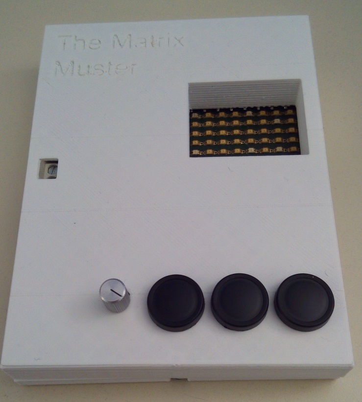
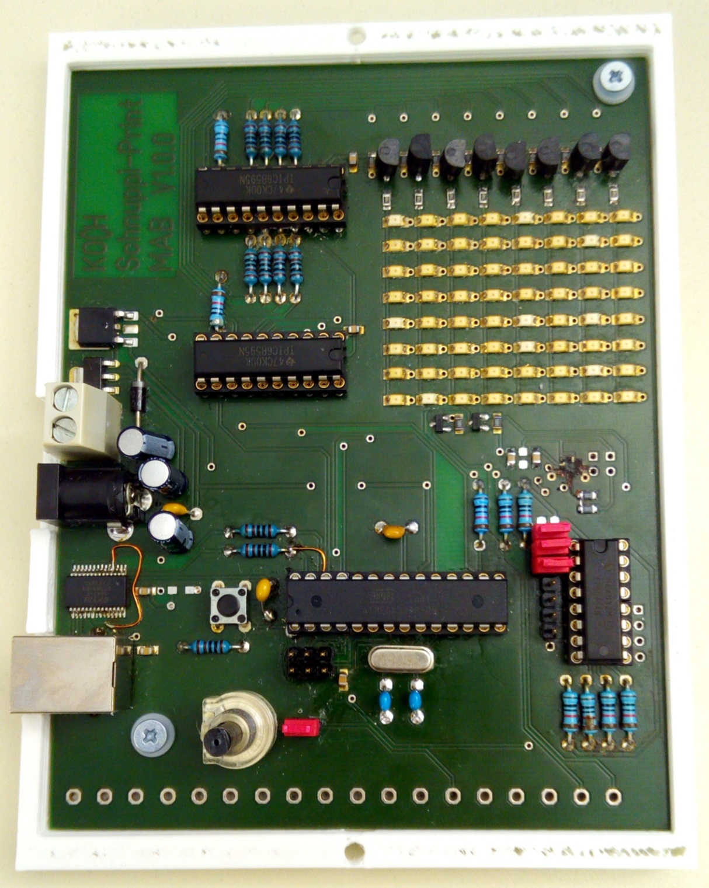
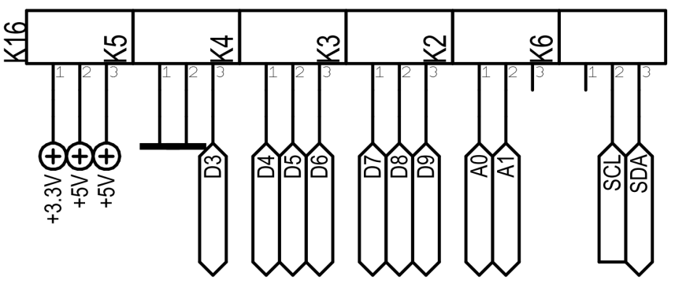

<html>
<head>

    <meta http-equiv="Content-Type" content="text/html; charset=utf-8" />
    <meta http-equiv="Content-Style-Type" content="text/css" />

    <script type="text/javascript" src="./vendor/javascripts/jquery.js"></script>
    <script type="text/javascript" src="./vendor/javascripts/template.js"></script>
    <script type="text/javascript" src="./vendor/javascripts/ember.js"></script>
    <script type="text/javascript" src="./vendor/javascripts/highlight.js"></script>
    <script type="text/javascript" src="./assets/javascripts/application.js"></script>

    <link rel="stylesheet" href="./vendor/stylesheets/bootstrap.css" />
    <link rel="stylesheet" href="./vendor/stylesheets/highlight.css" />
    <link rel="stylesheet" href="./vendor/fonts/css/font-awesome.css" />
    <link rel="stylesheet" href="./assets/stylesheets/application.css" />

    <title>KochAG Matrix Projekt</title>
</head>
<body>

    <script type="text/x-handlebars" id="application">
        <header>
            <h1>
                <span class="company-font">René Koch</span>
                Matrix Projekt
            </h1>
        </header>

        <div id="wrapper" class="row">
            <section id="sidebar" class="col-md-3">

                <div class="panel panel-default">
                    <div class="panel-heading">
                        <h3 class="panel-title">Übersicht</h3>
                    </div>
                    <div class="panel-body">
                        <div class="panel-link">
                            {{#link-to 'index'}} Projektinformationen{{/link-to}}
                        </div>
                    </div>
                </div>

                
                <div class="panel panel-default">
                    <div class="panel-heading">
                        <h3 class="panel-title">Hardware</h3>
                    </div>
                    <div class="panel-body">
                        <div class="panel-link">
                            {{#link-to 'hardware-case'}} Gehäuse und Speisung{{/link-to}}
                        </div>
                        <div class="panel-link">
                            {{#link-to 'hardware-print'}} Print Übersicht{{/link-to}}
                        </div>
                        <div class="panel-link">
                            {{#link-to 'hardware-partlist'}} Print Stückliste{{/link-to}}
                        </div>
                    </div>
                </div>


                <div class="panel panel-default">
                    <div class="panel-heading">
                        <h3 class="panel-title">Software</h3>
                    </div>
                    <div class="panel-body">
                        <div class="panel-link">
                            {{#link-to 'software-preparation'}}Vorbereitung{{/link-to}}
                        </div>
                        <div class="panel-link">
                            {{#link-to 'software-installation'}}Installation{{/link-to}}
                        </div>
                        <div class="panel-link">
                            {{#link-to 'software-examples'}}Beispiele{{/link-to}}
                        </div>
                        <div class="panel-link">
                            {{#link-to 'software-documentation'}}Dokumentation{{/link-to}}
                        </div>
                    </div>
                </div>
            </section>

            <div class="col-md-1 spacer">&nbsp;</div>

            <section id="content" class="col-md-8">
                {{outlet}}
            </section>
        </div>

        <footer>
            <span class="copyright">&copy; 2015 <a href="http://kochag.ch">René Koch AG</a></span>
        </footer>
    </script>


    <script type="text/x-handlebars" id="index">
        <h1>Projekt <em>MATRIX</em></h1>
        <p>
            Das Matrix Projekt ist ein einfaches Eleketronikprojekt, das von der René
            Koch AG während der Schnupperlehre zusammen mit den teilnehmenden Schnupperlehrlingen
            gefertigt wird. Die Software des Projektes basiert auf dem offenen Arduino System,
            mit dem es möglich ist, das Gerät auch nach der Schnupperlehre Zuhause oder in der 
            Schule einfach neu zu programmieren und weiter zu verwenden.
        </p>
        <p>
            Das Ziel dieses Projektes ist, ein Gerät zu erstellen, das nicht nur während der Schnupperlehre 
            verwendet werden kann, sondern auch danach weiterhin einen produktiven Nutzen bietet.
            Grundsätzlich handlet es sich dabei um eine LED-Matix aus (bis zu) 64 LEDs die Softwareseitig
            komplett frei angesteuert werden können.
        </p>
        <p>
            Zusätzlich beinhaltet die Projekthardware noch ein Potentiometer, drei Buttons und ein 
            Accelerometer (Beschleunigungssensor), die über die Software ausgelesen und für eigene Anwendungen
            genutzt werden können.
        </p>

        <h3>Diese Dokumentation</h3>
        <p>
            Bei dieser Dokumentation handelt es sich um eine öffentliche Projektdokumentation. Das Projekt
            sollte mit den hier gegeben Informationen selbstständig zu bauen, warten oder programmieren sein.
            Die Dokumentation beinhaltet detailierte Informationen zur Software, um das Programmieren des
            Gerätes so einfach wie möglich zu gestalten.
        </p>
        <p>
            Das Matrix-Projekt befindet sich im Moment noch in einer sehr frühen Entwicklungsphase, folgende
            Teile der Dokumentation sind im Moment nocht nicht, oder noch nicht vollständig vorhanden: 
            <em>Gehäuse und Speisung</em>, <em>Print Übersicht</em>, <em>Software Dokumentation</em>
        </p>
    </script>


    <script type="text/x-handlebars" id="hardware-case">
        <p>
            Das Gerät kann entweder über Kabel oder Hohlbuchse mit <strong>7V - 20V</strong>
            oder über ein USB-B Kabel direkt vom PC gespiesen werden.
        </p>
        <h3>Aktuelle Gehäuseversion</h3>
        
    </script>


    
    <script type="text/x-handlebars" id="hardware-print">
        
        
    </script>


    
    <script type="text/x-handlebars" id="hardware-partlist">
        <h1>Hardware - Stückliste</h1>
        <p>
            Die folgende Stückliste beinhaltet alle Bauteile, die benötigt werden um den Matrix Print
            vollständig und funktionsfähig zu bestücken.
        </p>
        <table class="table table-striped">
            <tbody>
                <tr>
                    <td><strong>Pos.</strong></td>
                    <td><strong>Anz.</strong></td>
                    <td><strong>Name</strong></td>
                    <td><strong>Wert</strong></td>
                    <td><strong>Gehäuse</strong></td>
                </tr>
                <tr>
                    <td>1</td>
                    <td>3</td>
                    <td>C1,C5,C7</td>
                    <td>100nF</td>
                    <td>4X8R5,08</td>
                </tr>
                <tr>
                    <td>2</td>
                    <td>2</td>
                    <td>C2,C3</td>
                    <td>22pF</td>
                    <td>6X3R5,08</td>
                </tr>
                <tr>
                    <td>3</td>
                    <td>2</td>
                    <td>C4,C6</td>
                    <td>10µF</td>
                    <td>D4R2,54_E/LrO</td>
                </tr>
                <tr>
                    <td>4</td>
                    <td>8</td>
                    <td>C8, C10, C11, C12, C13, C14, C15, C16</td>
                    <td>100nF</td>
                    <td>0805</td>
                </tr>
                <tr>
                    <td>5</td>
                    <td>1</td>
                    <td>C9</td>
                    <td>4.7µF</td>
                    <td>0805</td>
                </tr>
                <tr>
                    <td>6</td>
                    <td>1</td>
                    <td>C17</td>
                    <td>10µF</td>
                    <td>D6R2, 54_E/LrO</td>
                </tr>
                <tr>
                    <td>7</td>
                    <td>64</td>
                    <td>D1-D64</td>
                    <td>FR1101F</td>
                    <td>1206-D</td>
                </tr>
                <tr>
                    <td>8</td>
                    <td>1</td>
                    <td>D65</td>
                    <td>1N4007</td>
                    <td>D_RM12, 7_D/Mr</td>
                </tr>
                <tr>
                    <td>9</td>
                    <td>1</td>
                    <td>D67</td>
                    <td>MBR0520</td>
                    <td>SOD323</td>
                </tr>
                <tr>
                    <td>10</td>
                    <td>1</td>
                    <td>IC1</td>
                    <td>ATMEGA328P</td>
                    <td>DIL28S</td>
                </tr>
                <tr>
                    <td>11</td>
                    <td>1</td>
                    <td>IC2</td>
                    <td>PCF8574</td>
                    <td>DIL16</td>
                </tr>
                <tr>
                    <td>12</td>
                    <td>2</td>
                    <td>IC3, IC4</td>
                    <td>TPIC6B595N</td>
                    <td>DIL20</td>
                </tr>
                <tr>
                    <td>13</td>
                    <td>1</td>
                    <td>IC5</td>
                    <td>LM1117MPX-3.3</td>
                    <td>SOT223</td>
                </tr>
                <tr>
                    <td>14</td>
                    <td>1</td>
                    <td>IC6</td>
                    <td>MC78M05CDTG</td>
                    <td>TO252/Ar </td>
                </tr>
                <tr>
                    <td>15</td>
                    <td>1</td>
                    <td>K1</td>
                    <td>FT232RL</td>
                    <td>SSOP28</td>
                </tr>
                <tr>
                    <td>16</td>
                    <td>63</td>
                    <td>K2, K3, K4, K5, K6, K16</td>
                    <td>ANSCH.KLEMME_ P3</td>
                    <td>ANSCH.KLEMM/Er3</td>
                </tr>
                <tr>
                    <td>17</td>
                    <td>2</td>
                    <td>K7, K10</td>
                    <td>K2X03</td>
                    <td>2X03</td>
                </tr>
                <tr>
                    <td>18</td>
                    <td>1</td>
                    <td>K8</td>
                    <td>USB-B-PRINT</td>
                    <td>USB-B-PRI/Nr </td>
                </tr>
                <tr>
                    <td>19</td>
                    <td>1</td>
                    <td>K9</td>
                    <td>ANSCH.KLEMME_ P2</td>
                    <td>ANSCH.KLEMM/Er2</td>
                </tr>
                <tr>
                    <td>20</td>
                    <td>1</td>
                    <td>K11,  K12</td>
                    <td>K1X04</td>
                    <td>1X04</td>
                </tr>
                <tr>
                    <td>22</td>
                    <td>6</td>
                    <td>K14, K17, K18</td>
                    <td>JUMPER2</td>
                    <td>1/Xr2</td>
                </tr>
                <tr>
                    <td>23</td>
                    <td>1</td>
                    <td>Q1</td>
                    <td>16MHz</td>
                    <td>HC49/U</td>
                </tr>
                <tr>
                    <td>24</td>
                    <td>11</td>
                    <td>R1, R2, R3, R20, R21, R22, R23, R24, R25, R26, R27</td>
                    <td>1K</td>
                    <td>0207</td>
                </tr>
                <tr>
                    <td>25</td>
                    <td>9</td>
                    <td>R4, R5, R6, R9, R10, R11, R36, R37, R40</td>
                    <td>10K</td>
                    <td>0207</td>
                </tr>
                <tr>
                    <td>26</td>
                    <td>11</td>
                    <td>R7, R8, R12, R13, R14, R15, R16, R17, R18, R19, R38</td>
                    <td>10K</td>
                    <td>0805</td>
                </tr>
                <tr>
                    <td>27</td>
                    <td>8</td>
                    <td>R28, R29, R30, R31, R32, R33, R34, R35</td>
                    <td>150R</td>
                    <td>0805</td>
                </tr>
                <tr>
                    <td>28</td>
                    <td>1</td>
                    <td>R39</td>
                    <td>1K</td>
                    <td>0805</td>
                </tr>
                <tr>
                    <td>29</td>
                    <td>1</td>
                    <td>R41</td>
                    <td>10k</td>
                    <td>POTI_SMC-10/-r</td>
                </tr>
                <tr>
                    <td>30</td>
                    <td>1</td>
                    <td>S1</td>
                    <td>Taster_Kurzhub</td>
                    <td>TASTER_KURZHUB</td>
                </tr>
                <tr>
                    <td>31</td>
                    <td>8</td>
                    <td>T1, T2, T3, T4, T5, T6, T7, T8</td>
                    <td>BC327/16</td>
                    <td>TO92</td>
                </tr>
                <tr>
                    <td>32</td>
                    <td>2</td>
                    <td>T9, T10</td>
                    <td>BSS138</td>
                    <td>SOT23</td>
                </tr>
                <tr>
                    <td>33</td>
                    <td>1</td>
                    <td>X3</td>
                    <td>JACK-PLUG0</td>
                    <td>DC10L</td>
                </tr>
                <tr>
                    <td>34</td>
                    <td>1</td>
                    <td>X4</td>
                    <td>MMA8452Q</td>
                    <td>QFN-16_0.5MM</td>
                </tr>
            </tbody>
        </table>
    </script>


    

    <script type="text/x-handlebars" id="software-preparation">
        <h1>Software - Vorbereitung</h1>
        Das RKAG-Matrix Projekt basiert auf dem Arduino Framework bla blub
    </script>


    
    <script type="text/x-handlebars" id="software-installation">
        <h1>Software - Installation</h1>
    </script>


    
    <script type="text/x-handlebars" id="software-examples">
    script
    </script>


    
    <script type="text/x-handlebars" id="software-documentation">
        <h1>Software Dokumentation</h1>
        <p>
            Die Software Dokumentation ist in der aktuellen Version noch nicht vorhanden.<br />
            Alle wichtigen Funktionen der Software sind in den Beispielen erläutert.
        </p>
        <p>
            Sämtliche verfügbaren Methoden sind im Header-File der API abgebildet:
            <pre><code class="c">
void init();
int read_io();

void write(
    char byte1,
    char byte2,
    char byte3,
    char byte4,
    char byte5,
    char byte6,
    char byte7,
    char byte8);

void write_array(
    char matrix[]);

void clear();

void sample(int numb);

void font_write(int numb);

void pcf_write(int data);

int pcf_read();

int taste_1;
int taste_2;
int taste_3;

int potentiometer_0;
            </code></pre>
        </p>
        <p>&nbsp;</p>
        <p>
            Aufgerufen werden können diese beispielsweise via <em>matrix.init();</em> für Methoden
            oder <em>matrix.taste_1</em> um einen Tasten-/Potentiometerwert zu erhalten.
        </p>
    </script>

</body>
</html>